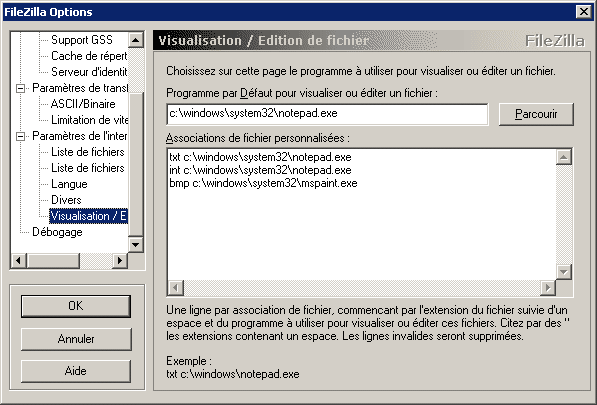

Visualisation / Édition de fichier
Vue d'ensemble:
FileZilla peut visualiser / éditer des fichiers sur le serveur. Dans cette section vous pouvez associer des programmes à différents types de fichiers.

Programme par défaut pour ouvrir ou éditer un fichier
Le programme par défaut est toujours utilisé pour ouvrir un fichier si aucun autre programme n'a été spécifié pour ce type de fichier.
Associations personnalisées de fichiers
Chaque ligne représente une association de fichier.
Toutes les lignes commencent avec l'extension suivie d'un espace. Suit ensuite,
le programme qui sera utilisé pour ouvrir le type de fichier. Vous devrez
mettre entre guillemets toute extension qui contient des espaces. Les lignes
non valides seront supprimées de la liste.
Pour des fichiers sans extension, par exemple les fichiers ayant pour nom README
qui peuvent être trouvés sur beaucoup de serveurs, entrez un simple
point comme type de fichier.
Quelques exemples:
txt c:\windows\system32\notepad.exe
abc c:\program files\abc\abc.exe
"ma très longue extension" c:\mytool.exe
. c:\mytools\textview.exe